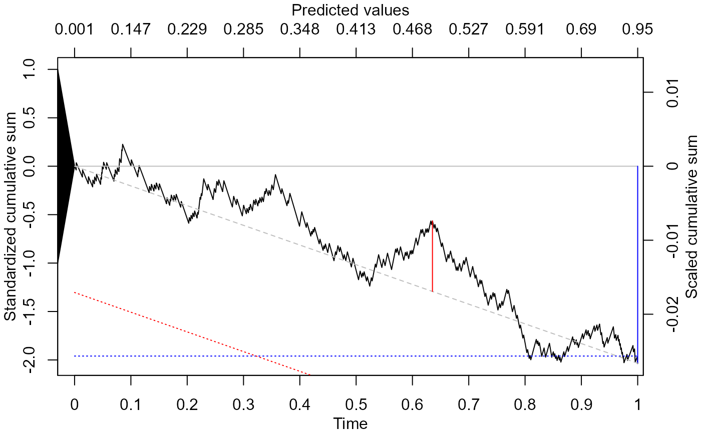

cumulcalib.RdThis is the core function for performing cumulative calibration assessment
cumulcalib(y, p, method = c("BB", "BM"), ordered = F, n_sim = 0)vector of binary responses
vector of predicted probabilities.
string with either BB (Brownian bridge test, default method), BM (Brownian motion test), BM2p (two-part BM test - experimental), BB1p (one-part BB test wit only the 'bridge' component). Multiple methods can be specified. The first one will be the 'main' method (e.g., when submitting the resulting object to plot()). Default is c("BB","BM")
if TRUE, y and p are already ordered based on ascending values of p. This is to speed up simulations.
if >0, indicates a simulation-based test is requested for inference.
an objective of class cumulcalib that can be printed or plotted
pi <- rbeta(1000,1,2)
Y <- rbinom(length(pi),1,pi)
res <- cumulcalib(Y, pi, method="BB")
summary(res)
#> [1] "C_n: -0.0266265603813413"
#> [1] "S_n: -2.03440518231254"
#> [1] "C_star: 0.0266761685555726"
#> [1] "S_star: 2.03819550014916"
#> [1] "B_star: 0.728518208759595"
#> [1] "Method: Two-part Brownian Bridge (BB)"
#> [1] "Test statistic values:"
#> mean distance
#> -2.0344052 0.7285182
#> [1] "Component-wise p-values:"
#> mean distance
#> 0.04191076 0.59455655
#> [1] "Combined value (Fisher'smethod): 0.116920533044745"
#> [1] "Terminal value (z score for mean claibration): -2.03440518231254"
#> [1] "Location of maximum drift: 709 | time value: 0.635542076511865 | predictor value: 0.493567498161127"
plot(res)
